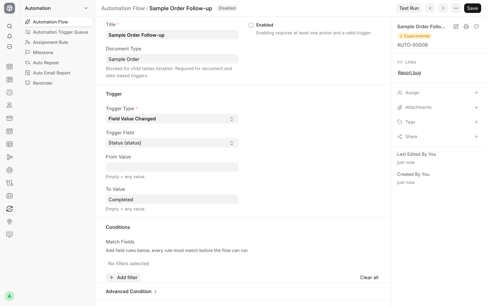
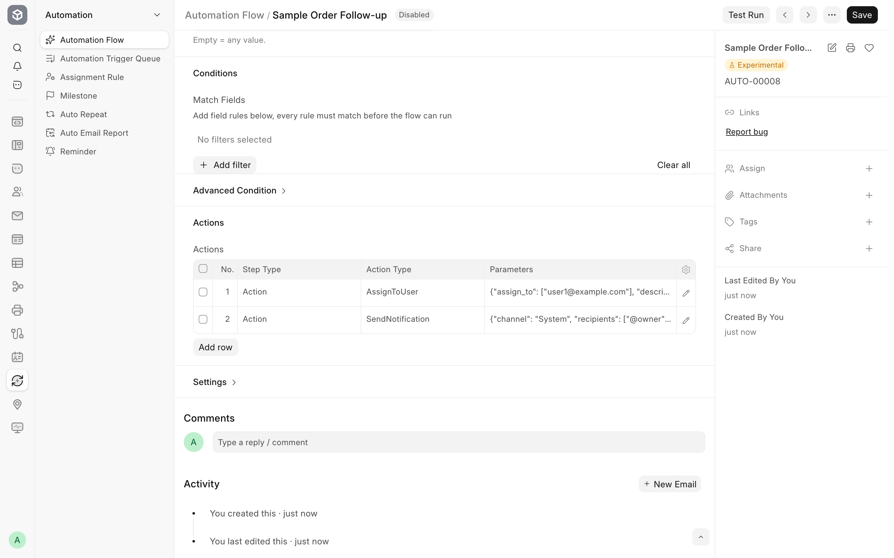

Automation Flow¶
An Automation Flow runs a list of steps when a trigger fires: a document is created, a field changes, a date comes near, a cron schedule is due, or an app sends an event. Steps can set fields, create documents, assign users, send notifications, call webhooks and run server scripts. Use it for multi-step automation without code. For one simple rule, an Assignment Rule or a Notification can be enough.
Note
Automation Flow is marked Experimental in the desk. Only System Managers can create flows.
How a flow runs¶
- A trigger fires. Frappe checks the trigger, the match fields and the advanced condition.
- If they match, Frappe adds a row to
Automation Trigger Queue. The save that fired the trigger does not wait. - A background job takes rows from the queue and runs the flow.
- Each run is saved as an
Automation Runwith one row for each step.
Because steps run in the background, an error in a step does not block the save that fired the trigger.
Create a flow¶
- Go to
/desk/automation-flow/new. - Enter a Title and select the Document Type.
- Select the Trigger Type and fill in its fields.
- Optional: add match fields or an advanced condition.
- Add rows in Actions.
- Save.
- Select Enabled and save again.
A flow can only be enabled when it has at least one action.

Triggers¶
| Trigger Type | Fires when | Fields |
|---|---|---|
| Doc Created | A document is inserted. | |
| Doc Updated | A document is saved, but not on insert. | |
| Field Value Changed | A saved document has a new value in a field. | Trigger Field, optional From Value and To Value (empty means any value). |
| Doc Deleted | A document is deleted. | |
| Doc Submitted | A document is submitted. | |
| Doc Cancelled | A document is cancelled. | |
| Date Based | A date field is a number of days before or after today. Checked every hour. Each document fires once a day. | Date Field, Date Offset (Days), Date Direction |
| Scheduled | A cron expression is due. Checked every 5 minutes. | Cron Expression, for example 0 9 * * 1 |
| Custom Event | An app sends an event with this name. | Custom Event |
| Manual | Started from code with run_manually. |
Document triggers and Date Based need a Document Type. A child table DocType is not allowed.
Conditions¶
- Match Fields: field rules made with the filter editor. All rules must match.
- Advanced Expression using Python (
condition): an expression withdoc, for logic the match fields cannot express, such as OR groups. The match fields and the expression must all be true. - Revalidate on Run: check the match fields and the expression again in the background job before the steps run.
Steps¶
Each row in Actions is one step. Steps run in order.

| Field | Description |
|---|---|
| Step Type | Action, Wait, WaitForEvent or If. Default Action. |
| Action Type | For Action steps. See the table below. |
Parameters (params) |
JSON with the values for the action. |
| Target | The record alias the step acts on. Default trigger, the document that fired the flow. |
| Output Alias | A name for the record that this step creates, for later steps. |
| Step Condition | Python expression. The step runs only when it is true. Required for If steps. |
| Parent Step / Parent Step Branch | Put a step inside an earlier If step, in its If or Else branch. |
Built-in actions:
| Action Type | Label | Parameters |
|---|---|---|
SetFieldValue |
Set Field Value | field and value, or values (a map of field to value). Saves the document. |
IncrementFieldValue |
Increment Field Value | field (a numeric field), amount. |
CreateDocument |
Create Document | doctype, values. |
AssignToUser |
Assign to User | assign_to (list of users), description. |
SendNotification |
Send Notification | channel (Email or System), recipients, subject, message, or email_template. Use @owner and @assignees as recipients. For Email, Frappe sends to each value as given, so use user IDs that are email addresses. |
CallWebhook |
Call Webhook | url, method, headers, payload, timeout (seconds). |
RunScript |
Run Script | server_script (a Server Script of type API) or script, not both. |
Text values in parameters are Jinja templates with doc, for example "Order {{ doc.name }} completed".
Other step types:
Wait: pause the run. Parameters:valueandunit(Seconds,Minutes,HoursorDays).WaitForEvent: pause until an app sends an event, or until a timeout. Parameters:event_name,correlation_key,timeout_value,timeout_unit.If: run the child steps in theIfbranch when Step Condition is true, else theElsebranch.
Example parameters for a Set Field Value step:
{"values": {"status": "Completed", "owner_user": "user1@example.com"}}
Settings of a flow¶
| Field | Default | Description |
|---|---|---|
| Run As | Automation User |
Triggering User, Document Owner or Automation User. The steps run with this user's permissions. |
| Automation User | Administrator |
The user for Automation User. Must be enabled. |
| Stop on Error | 1 | Stop the run at the first failed step. |
Test a flow¶
Click Test Run on a saved flow. Select a document in Run against and click Run. The flow runs for real against this document, then Frappe rolls back everything it did. The result shows each step and its status. CallWebhook steps do not send requests in a test run, and Wait steps do not pause.
Runs and history¶
Automation Run(/desk/automation-run): one record for each run, with statusRunning,Waiting,Success,Partially Failed,FailedorSkipped. The Steps table has the status, duration, detail and error of each step.Automation Trigger Queue(/desk/automation-trigger-queue): rows waiting to run, with statusPending,Scheduled,Running,Done,FailedorSkipped.
After a number of failures in a row (Failure Threshold, default 10), Frappe disables the flow. It sets Disabled Reason, skips the waiting rows, and sends a notification to the owner of the flow.
Automation Settings¶
Go to /desk/automation-settings.
| Field | Default | Description |
|---|---|---|
| Disable Automations | 0 | Stop all flows on the site. Queued rows stay. |
| Maximum Recursion Depth | 3 | How many times a flow can trigger another flow in one chain. |
| Failure Threshold | 10 | Failures in a row before a flow is disabled. |
| Stale Running Minutes | 30 | A row that stays Running longer is queued again. |
| Maximum Attempts | 3 | Retries for a row that fails outside its steps. |
| Queue Retention Days | 7 | Days to keep Failed and Skipped queue rows. |
| Step Output Limit | 65536 | Bytes of output a step can pass to later steps. |
| Event Payload Limit | 65536 | Bytes an event payload can have. |
| Allow Unregistered Events | 0 | Accept events that no app registered. |
Pitfalls¶
- Flows do not run during install, patches or migrate.
- A flow changes data with the Run As user. With the default
Automation User(Administrator), steps can change any document. - When a flow saves a document, that save can trigger other flows. The recursion depth limit stops long chains and logs an error.
For developers¶
- Send a custom event from code with
emit(event, doc=None, payload=None, correlation_key=None)infrappe/automation_engine/events.py. - Register events, actions and record relationships with the
automation_events,automation_actionsandautomation_relationshipshooks. - Start a Manual flow with
frappe.automation_engine.api.run_manually(automation, docname=None). - See Automation Engine for the developer guide.